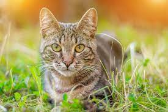

Gatinhos miau miau é uma empresa de gatos para gatos porém agora é outra empresa com Uno no final para ser bonito
O gato (Felis silvestris catus), também conhecido como gato caseiro, gato urbano ou gato doméstico,[4] é um mamífero carnívoro da família dos felídeos, muito popular como animal de estimação. Ocupando o topo da cadeia alimentar, é predador natural de diversos animais, como roedores, pássaros, lagartixas e alguns insetos. Segundo pesquisas realizadas por instituições norte-americanas, os gatos consistem no segundo animal de estimação mais popular do mundo, estando numericamente atrás apenas dos peixes de aquário.
caso precise de videos de gatinhos clique no gato
